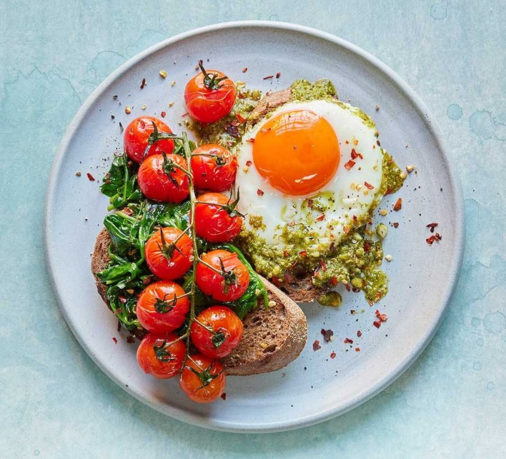
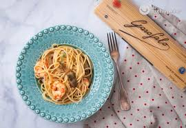
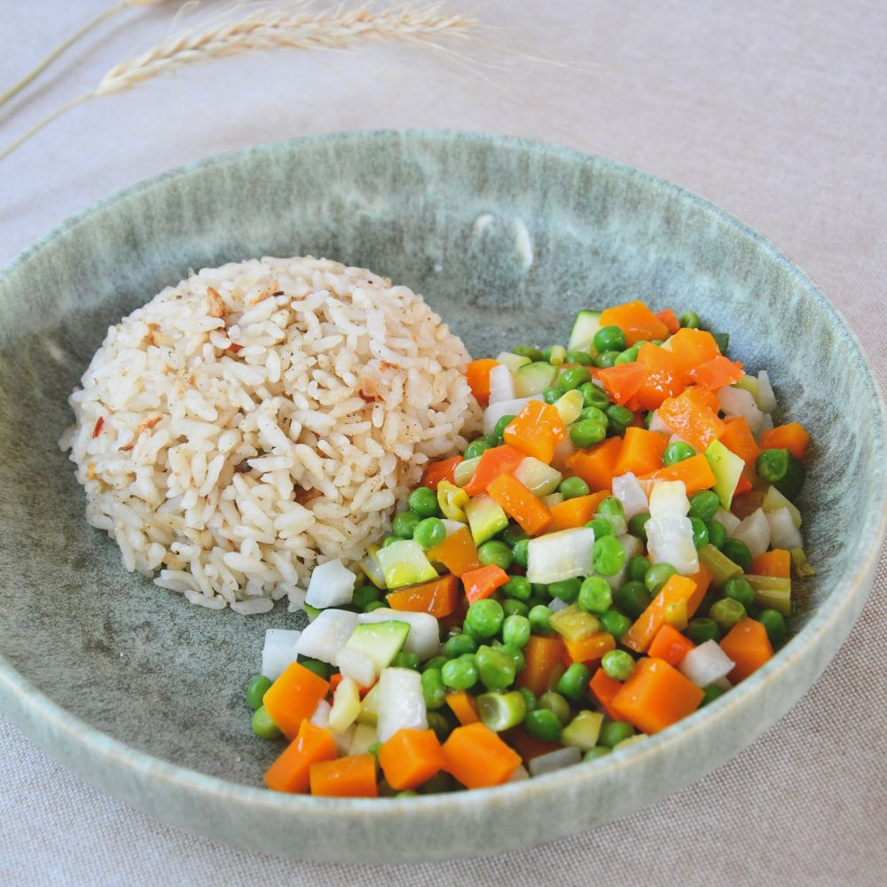
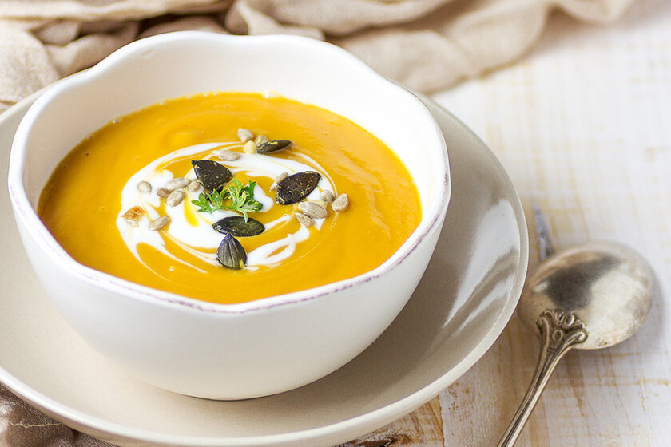
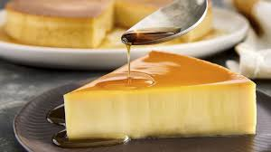
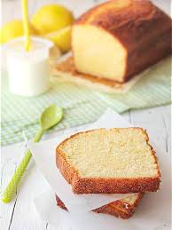

Comida como en casa
Platos sencillos, calientes y hechos con cariño
Preparamos comida casera todos los días, como en casa. Desayunos, comidas y cenas por encargo en Mieres.
☕ Desayuno
Café con leche
Café suave con leche caliente
Tostadas
Tostadas crujientes con huevo y guacomole


🍲 Comida
Sopa casera
Sopa caliente hecha con verduras frescas

Pasta fresca
Pasta hecha a mano con salsa de tomate natural

Arroz con verduras
Arroz integral con verduras de temporada

🍽 Cena
Crema de verduras
Suave crema con verduras frescas del día

Tortilla española
Tortilla de patata con cebolla caramelizada

🍰 Postres
Flan
Flan casero con caramelo suave

Bizcocho casero
Biscocho suave de zanahoria y especias

🥤 Bebidas
- Agua
- Zumos naturales
- Café